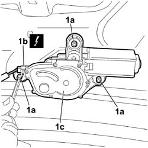
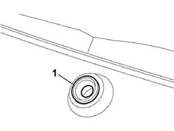

5050C42 REAR WIPER MOTOR - R+R
- Path
- Procedures > 50 AUXILIARY UNITS > 5050 SCREEN WASHERS AND HEADLAMP WASH/WIPE > 5050C REARSCREEN WASH/WIPE > 5050C42 REAR WIPER MOTOR - R+R
- Kind
- repair procedure (removal / refitting; the operation number is the code)
- Applies to
- all engines; all production periods
- Interactive page
- https://sloeber94.github.io/elrnDB-fCrm/en/#/194000657
Applies to: all engines; all production periods
 Removing
Removing
 Refitting
Refitting- Open the tailgate.
- Turn the ignition key to the OFF position.
- Disconnect the negative battery terminal.
Description | Connector | |
|---|---|---|
BATTERY |
Op. 5050C34 REAR WIPER ARM WITH BLADE - R+R
Op. 7015A04 TAILGATE INTERIOR PANEL - R+R
1. Working from inside the tailgate, undo the bolts (1a) fixing the windscreen wipermotor, release the electrical connection (1b) from the mounting and disconnect it, then remove the motor (1c) from the tailgate.
Description | Connector | |
|---|---|---|
1b | REARSCREEN WIPER MOTOR |

Applies to: all engines; all production periods
1. Working from the outside, remove the seal in the windscreen wiper motor shaft opening passage.

Applies to: all engines; all production periods
Refitting
Removing- Check the condition of the seal in the windscreen wiper motor shaft opening passage and replace it if necessary.
- Check that the windscreen wiper motor is not damaged and that it is working properly.
- Connect the electrical connection for the windscreen wiper motor.
Description | Connector | |
|---|---|---|
REARSCREEN WIPER MOTOR |
- Fit the connector in the special slot in the windscreen wiper motor.
- Working from the inside of the tailgate, place the windscreen wiper motor in its housing and tighten the fixing bolts.
Op. 7015A04 TAILGATE INTERIOR PANEL - R+R
Op. 5050C34 REAR WIPER ARM WITH BLADE - R+R
- Connect the negative battery terminal.
Description | Connector | |
|---|---|---|
BATTERY |
- Check that the windscreen wiper is working properly.
Topics linked from this page (4)
- 5050C34 REAR WIPER ARM WITH BLADE - R+R
- 7015A04 TAILGATE INTERIOR PANEL - R+R
- A001 BATTERY
- N016 REARSCREEN WIPER MOTOR